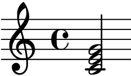

LilyPond
内容
LilyPond¶
提示
页面上的预览由 📦sphinxnotes-lilypond 生成
文件结构 1¶
可能出现在顶层的表达式如下：
- Output definition,
例如`paper`,
\midi, and\layout，重复的定义会被合并，若冲突后者优先- Direct scheme expression
类似
#(set-default-paper-size "a7" 'landscape)备注
这里的 scheme 是指 📖Scheme_(programming_language)
\header定义谱面的头部，包含标题、作曲家等信息
\score包含单个 Music Expression 2 ，所有顶层的
\score，会被隐式地包含在\book里\book用来实现同一份
*.ly文件输出多份谱子\bookpart似乎是用来占位以保证谱子不跨页的
- Music Expression
会被隐式地包含在
\score里- Markup text
TODO
- Variable
任意自定义的变量
记谱法¶
双音/和弦¶
用 <> 括住音名，后跟时值，如 :lily:`{ <c' e' g'>2 }` -> 
六线谱¶
五线谱六线谱混排¶
\symbols 是个 music expression [music-expr]
\score {
<<
\new Staff {
\clef "G_8"
\symbols
}
\new TabStaff {
\tabFullNotation
\symbols
}
>>
}
指定调式¶
以 G 大调为例，在任意一个 expression block 中：\key g \major。
每行四小节¶
每四个小节后面加个 \break。
输出¶
MIDI¶
输出 MIDI 文件¶
\score {
% ...
\midi { }
}
指定乐器¶
设置 Staff 的 midiInstrument 4 属性为乐器的名称 [#]_
\new Staff \with {midiInstrument = "acoustic guitar (nylon)"} {
% ...
}
脚注
- 1
https://lilypond.org/doc/v2.20/Documentation/notation/file-structure
- 2
https://lilypond.org/doc/v2.20/Documentation/music-glossary/pitch-names
- 3
https://lilypond.org/doc/v2.20/Documentation/notation/using-midi-instruments
- 4
https://lilypond.org/doc/v2.20/Documentation/notation/midi-instruments
评论
如果你有任何意见，请在此评论。 如果你留下了电子邮箱，我可能会通过 回复你。